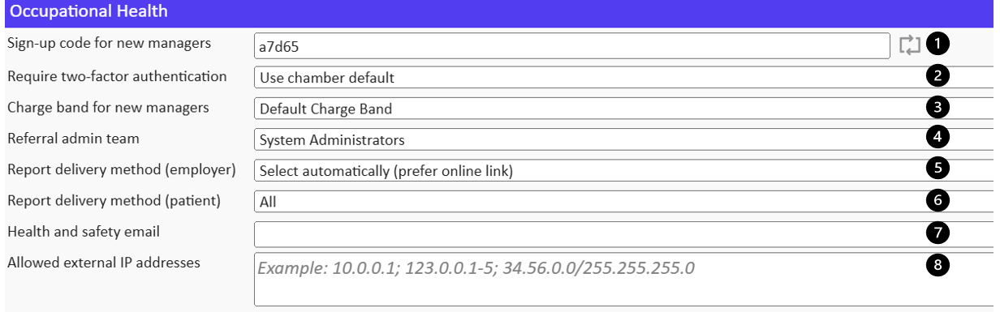
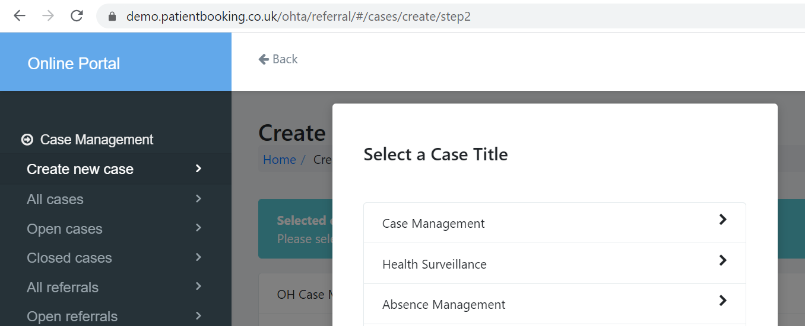
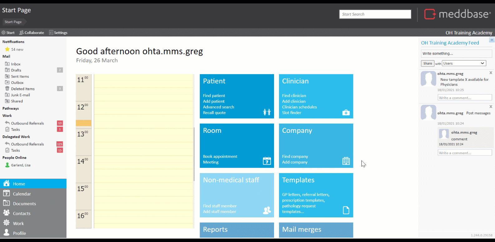
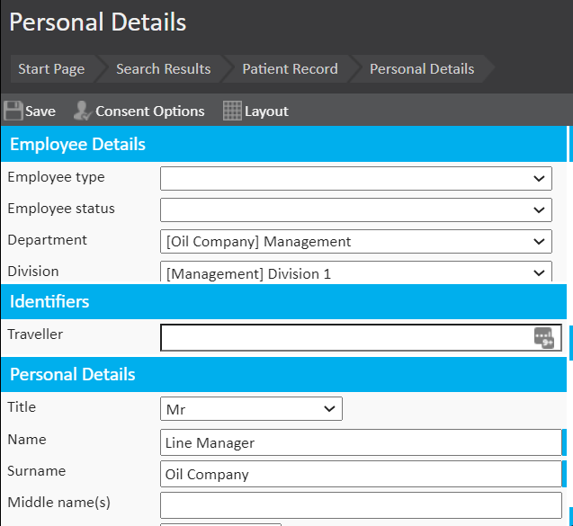

Meddbasegives users access to a comprehensive platform accommodating various aspects and workflows in Occupational Health. This functionality requires multiple configuration tasks to be completed in Meddbase.
What is the article purpose?
This article will walk you through the 1st part of the initial configuration required to utilize the Occupational Health functionality in Meddbase. The configuration steps discussed here are:
Enabling the feature
Adding the Incoming OH Referral Work Item
Adding 'Employer' type Companies and individual OH settings
Setting Case Titles
Adding Employee Departments
Setting Patient Contact Protocol (Optional)
Registering Employees
Setting Manager permissions
Enabling the feature
In order to begin using the Occupational Health system, it must first be enabled as follows:
From the Start Page, navigate to Admin > Configuration > System features.
Under Portals, tick Occupational Health Portal.
Under Chamber, check Pre-arrival Cases. Depending on your requirements, Absence Management can be switched on here as well).
Select Save.
Pre-arrival Cases feature needs to be switched on so that the Case Management workflow can be used to its full potential. Click here for a detailed article. Absence Management is an optional feature allowing the OH provider to manage clients employees' absences whilst keeping the manager informed. Click here for a detailed article
Adding an Incoming OH Referral Work Item
Another task in the process of configuring OH in Meddbaseis to add and configure the OH Referral Work Item:
From the Start Page, navigate to Admin > Work
Click New Work Type and select Incoming OH Referral
Select the default settings for your chamber incl. security, workflow and SLAs, templates and report review and detail messages. Click here for a detailed article on the Incoming OH Referral Work Item configuration.
Changes here are saved automatically.
Adding 'Employer' type companies and individual OH settings
All employers referring their staff for OH services need to have a record in Meddbase. Company records can be created in bulk via a Data Import. However, in this section, we'll explore adding them manually. A company record can be created and, as an option, individual OH settings can be defined for that employer, as follows:
From the Start Page, navigate to Company > Add Company
On the Add New Company screen provide as much detail about the company as you need, making sure the Type is set to Employer
Update the Occupational Health section of the Company record as required
Save the record when complete
The Occupational Health section of the Company Record allows overriding the chamber default behaviours and OH settings and adapting the workflow per company. They are explained in the sub-section below.
Occupational Health settings for an employer record
Sign up code for new managers (1) - allows new managers hired by this company to self-register via the Referral Portal and their records will also be created in Meddbase.
Require two-factor authentication (2) - enables two-factor authentication for managers logging into the Referral Portal.
Charge band for new manager (3) - determines which charge band (contract) a new manager will belong to/be governed by.
Referral Admin Team (4) - allows selecting a role group managing referrals from this employer
Report delivery method (employer) (5) - allows selecting an automatic or manual way for this employer to review the OH report.
Report delivery method (patient) (6) - allows selecting an automatic or manual way for the referred patients to review the OH report. The patient report review step can also be disabled for this company.
Health and Safety email (7) - allows a hard-coded message to be sent to a selected email recipient when a new absence caused by a work accident is logged (relevant in the Absence Management workflow).
Allowed external IP addresses (8) - allows managers working for this company to log in to the Referral Portal only from the listed IP addresses. IP addresses must be separated by a semi-colon (;). There is a limit of 4000 characters.

Setting Case Titles
Managers using the Referral Portal to refer employees or book appointments are prompted to select a Case Title for every referral or booking. The initial referral and any follow-up referrals will belong to this Case.
Click here for a detailed article on the administration and workflow surrounding Cases.

Adding Employee Departments
Once all employer companies have been registered, employee departments and divisions can be added for all respective companies. The process is as follows:
From the Start Page, navigate to Admin > Common Catalogues
Expand the Employee Departments catalogue and click New Employee Department
Name the department, give it a description and select the company this department belongs to
Select Save when complete
You will need to 'Save' your settings when complete. Sub-departments and/or divisions can be added to the newly created department. An employee can simultaneously belong to a department and the department's sub-department or division.


Setting Patient Contact Protocol (Optional)
Depending on requirements, Meddbase users managing incoming OH referrals can be prompted to contact the referred employee in a certain, custom manner, e.g. 2 call attempts, then email.
This is known as a Patient Contact Protocol and it can be subsequently assigned to referrals sent from specific employer(s).
Click here for a detailed article on setting up a contact protocol.
If no custom protocol is created, Meddbase users will still be prompted to contact the referred employee.
Registering employees
Employees/patients can be uploaded to the chamber in bulk via the Data Imports tool or by a manager via the Referral Portal.
In this article we will explore adding employees to the database manually:
From the Start Page, navigate to Patient and click Add Patient
On the patient registration page as a minimum, fill in the fields marked with a vertical blue bar (mandatory) and contact and address details (recommended) *
In the Account section, under the Payer dropdown, select Employer
In the Employer section, click on the Company field, search and select the respective employer **
In the Employee Details section, a previously created Department can be selected
Click Save and select the patient's contact preferences and click OK.
*The layout of the registration page can be amended; Layout > Unlock For Editing. **A default charge band is automatically assigned to an employer. However, it requires further configuration. Please see Part 3 of the initial setup.
Setting Manager Permissions
Employers' managers also need to be registered, as shown above. However, there is an extra layer of setup allowing a line manager oversight of departments and access to workflows via the Referral Portal:
Navigate to the manager's record page (Start Page > Find Patient)
Locate the Referral Portal icon*, click on it and select Portal Account Settings
*If both the Referral Portal and Patient Portal are in use, this icon will be shown as Online Portals, and Referral Portal will be a sub-category.
The Permissions section gives the manager access to the following workflows:
Case management: The user can refer patients and manage the referrals.
Recall management: The user can view and manage the recalls.
User management: The user can create/edit and remove users.
Bulk case reallocation: The user can reallocate all referrals from one user to another.
Statistics/Charts: The user can view portal statistics and charts.
Questionnaire management: The user can share and delete questionnaire modules.
The Departments section allows selecting which departments the manager can view and/or manage.
The choice to Create and invite and Create with no invitation means we can either notify the manager of the Referral Portal access via email or not.
![[Full alt text]](images/Manager%20permissions.gif)